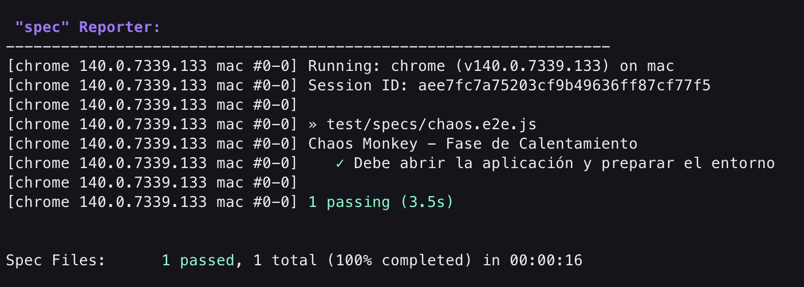
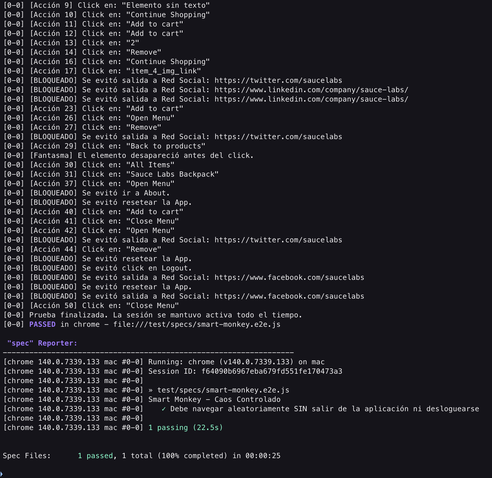
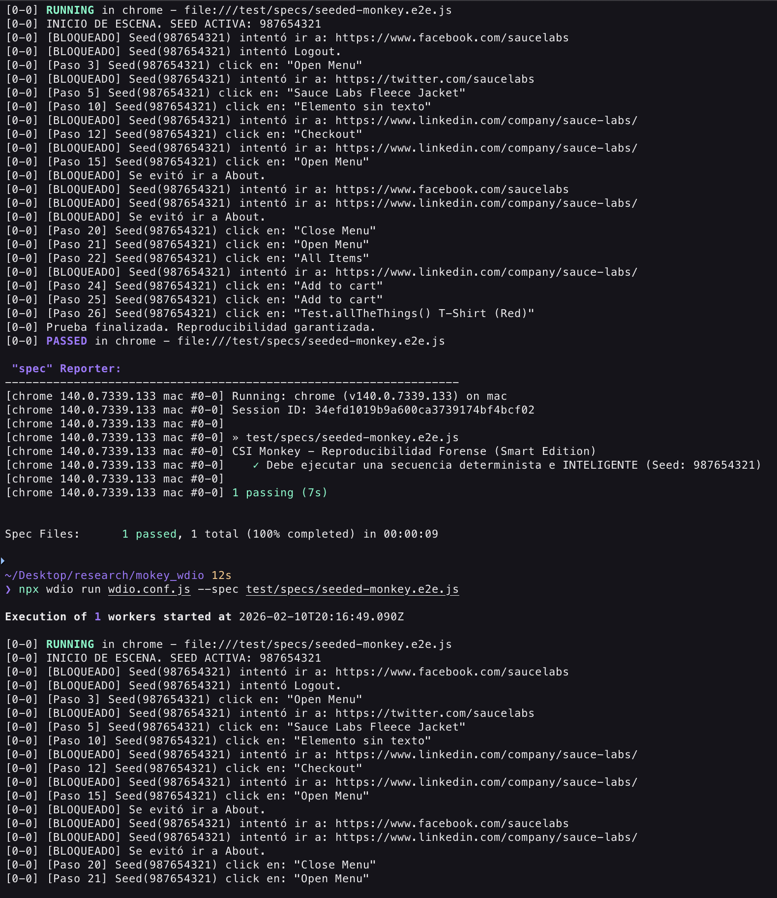

"Si le das a un millón de monos máquinas de escribir, eventualmente uno escribirá las obras de Shakespeare. Pero el resto escribirá código que hará colapsar tu servidor."
Hasta ahora, hemos aprendido a ser Francotiradores: escribimos pruebas precisas (Cypress) que verifican un camino exacto (Login -> Click -> Compra).
Pero, ¿qué pasa si el usuario no sigue el camino feliz? ¿Qué pasa si un gato camina sobre el teclado? ¿O si un niño empieza a tocar la pantalla de la tablet frenéticamente?
Como Ingenieros de Automatización, estamos entrenados para pensar de manera Determinista. Diseñamos casos de prueba basados en requisitos claros:
A esto lo llamamos el "Happy Path" (Camino Feliz). Incluso cuando probamos errores (caminos negativos), seguimos un guion predecible.
Sin embargo, el mundo real es Estocástico (aleatorio).
El Monkey Testing no busca verificar si la funcionalidad es correcta (¿Suma 2+2?), busca verificar la Robustez y Estabilidad (¿Si presiono "=" 500 veces, la app explota?).
El Monkey Testing es una técnica de pruebas de software en la que la aplicación se somete a entradas y eventos aleatorios deliberados para comprobar su comportamiento bajo estrés impredecible.
No buscamos "Fallos Funcionales" (ej: el cálculo está mal), buscamos "Excepciones No Controladas":
UI Thread).El objetivo no es verificar funcionalidad, sino robustez. Buscamos que la aplicación no explote (Crash, Freeze, White Screen of Death) ante lo inesperado.
<button>, un enlace <a> o un input <input>. No dispara al aire; dispara a elementos interactivos.Login -> Navegar -> Random -> Logout) pero introduciendo caos en los valores de los datos.El mayor dolor de cabeza del Monkey Testing es: "El sistema falló, pero no sé cómo pasó".
Si un mono ejecuta 10,000 acciones en 5 minutos y la aplicación crashea en la acción 9,999, ¿cómo le explicamos al desarrollador qué debe arreglar?
La Regla de Oro: Un buen Monkey Test siempre debe tener Trazabilidad.
[ACCION 450] Click en botón #submit-btn).Para este taller usaremos WebdriverIO en lugar de Cypress o Selenium puro por razones estratégicas:
Lo que aprenderás:
Lo que necesitas:
Sobre qué trabajarás:
Antes de liberar a nuestros "monos" digitales para que golpeen la interfaz, necesitamos construir una jaula resistente. En términos de ingeniería, esto significa configurar un framework de automatización que nos permita controlar el navegador con precisión quirúrgica, manejar procesos asíncronos y recuperar logs cuando todo colapse.
Para este taller, nuestra herramienta elegida es WebdriverIO (WDIO). A diferencia de otras herramientas que operan dentro del contexto del navegador, WebdriverIO corre en Node.js y se comunica con el navegador a través del protocolo WebDriver (o DevTools). Esta arquitectura es crucial para el Monkey Testing porque nos da un "hilo de ejecución" separado desde donde podemos inyectar caos sin que el script de prueba muera si la página web se congela.
Comenzaremos creando un espacio de trabajo limpio. El Monkey Testing suele generar muchos artefactos (logs, capturas, reportes de error), por lo que es vital mantener una estructura de carpetas ordenada desde el principio.
Abre tu terminal, navega a tu directorio de desarrollo y crea el directorio para el taller. Una vez dentro, iniciaremos un proyecto de Node.js estándar.
En la terminal, corre el siguiente comando:
npm init -y
npm init wdio@latest
Nota: Al ejecutarlo, el asistente te guiará a través de una serie de decisiones arquitectónicas. Para los propósitos de este taller, configuraremos un entorno de pruebas End-to-End (E2E) local para aplicaciones Web.
Cuando el asistente pregunte por el framework, seleccionaremos Mocha. Esta elección no es arbitraria; Mocha ofrece una sintaxis describe/itmuy similar a Jest o Jasmine, lo que reduce la curva de aprendizaje. Para el compilador en TypeScript, optaremos por No! (Javascript nativo) para mantener la simplicidad y evitar la complejidad de configurar TypeScript en este ejercicio introductorio.
Asegúrate de aceptar la autogeneración de archivos de prueba y el uso de Page Objects, ya que, aunque nuestros monos sean caóticos, nuestro código debe seguir siendo limpio.
✔ A project named "mokey_wdio" was detected at
"/Users/wareval0/Desktop/research/mokey_wdio", correct? Yes
✔ What type of testing would you like to do? E2E Testing - of Web or Mobile
Applications
✔ Where is your automation backend located? On my local machine
✔ Which environment you would like to automate? Web - web applications in the
browser
✔ With which browser should we start? Chrome
✔ Which framework do you want to use? Mocha (https://mochajs.org/)
✔ Do you want to use Typescript to write tests? No
✔ Do you want WebdriverIO to autogenerate some test files? Yes
✔ What should be the location of your spec files?
/Users/wareval0/Desktop/research/mokey_wdio/test/specs/**/*.js
✔ Do you want to use page objects
(https://martinfowler.com/bliki/PageObject.html)? Yes
✔ Where are your page objects located?
/Users/wareval0/Desktop/research/mokey_wdio/test/pageobjects/**/*.js
✔ Which reporter do you want to use? spec
✔ Do you want to add a plugin to your test setup?
✔ Would you like to include Visual Testing to your setup? For more information
see https://webdriver.io/docs/visual-testing! No
✔ Do you want to add a service to your test setup?
✔ Do you want me to run `npm install` Yes
wdio.conf.jsUna vez finalizada la instalación, verás un archivo llamado wdio.conf.js en la raíz. Este es el cerebro de nuestras operaciones.
A diferencia de herramientas "Zero Config", WebdriverIO expone toda su configuración. Esto es intimidante al principio, pero poderoso para el Monkey Testing. Necesitamos modificar una propiedad clave: la baseUrl. Esto nos permitirá cambiar el entorno de pruebas (Desarrollo, QA, Producción) sin tocar el código de los monos.
Abre el archivo y localiza la propiedad baseUrl (en nuestro caso, en la línea 87). Descomenta, configúrala para apuntar a nuestra aplicación objetivo, Swag Labs:
exports.config = {
runner: 'local',
specs: [
'./test/specs/**/*.js'
],
exclude: [
// 'path/to/excluded/files'
],
maxInstances: 10,
capabilities: [{
browserName: 'chrome',
'goog:chromeOptions': {
// Si quieres ver el navegador, comenta la siguiente línea.
// Para CI/CD, descoméntala para usar modo headless.
// args: ['--headless', '--disable-gpu']
}
}],
logLevel: 'warn',
logLevels: {
webdriver: 'silent',
webdriverio: 'silent',
'@wdio/local-runner': 'silent',
'@wdio/cli': 'silent'
},
bail: 0,
baseUrl: 'https://www.saucedemo.com',
waitforTimeout: 10000,
connectionRetryTimeout: 120000,
connectionRetryCount: 3,
framework: 'mocha',
reporters: ['spec'],
mochaOpts: {
ui: 'bdd',
timeout: 60000
},
}
Antes de escribir algoritmos complejos, debemos validar que la comunicación entre Node.js y el navegador funciona correctamente. WebdriverIO utiliza async/await. Cada interacción con el navegador (hacer clic, leer texto, navegar) es una promesa que debe ser resuelta.
Vamos a eliminar los archivos de ejemplo que generó el asistente (en test/specs/) y crearemos nuestro primer script de control llamado chaos.e2e.js.
Crea el archivo test/specs/chaos.e2e.js y añade el siguiente código:
describe('Chaos Monkey - Fase de Calentamiento', () => {
it('Debe abrir la aplicación y preparar el entorno', async () => {
// 1. Preparamos la viewport
// Maximizar asegura que todos los elementos sean visibles y clickeables
await browser.maximizeWindow();
// 2. Navegación
// Usamos '/' porque ya definimos la baseUrl en el archivo de config
await browser.url('/');
// 3. Verificación de Estado
// Antes de soltar al mono, confirmamos que la app está viva
const title = await browser.getTitle();
if (title !== 'Swag Labs') {
throw new Error('La aplicación no cargó correctamente. Abortando misión.');
}
console.log('Conexión establecida: El objetivo "Swag Labs" ha sido localizado.');
// Pausa didáctica para observar el resultado (evitar en producción)
await browser.pause(2000);
});
});
Observa el uso de await browser.url('/'). En este punto, el script de Node.js envía una instrucción HTTP al driver de Chrome, espera a que el navegador cargue la página, y solo entonces continúa a la siguiente línea. Esta sincronización automática es una de las grandes ventajas de WDIO.
Llegó el momento de la verdad. Ejecuta el framework utilizando el comando CLI de WebdriverIO:
npx wdio run wdio.conf.js
Si la configuración es correcta, verás una ventana de Chrome abrirse, cargar el sitio de Swag Labs y cerrarse poco después. En tu terminal, deberías recibir un reporte limpio.

Si obtienes un error relacionado con la versión de Chrome, no entres en pánico. WebdriverIO intenta descargar el driver correspondiente a tu navegador instalado, pero a veces hay desfaces. Generalmente, ejecutar npm install chromedriver --save-dev suele alinear las versiones.
Hemos preparado el escenario, y ahora llega el momento de escribir el guion del caos. En esta fase, programaremos lo que técnicamente se conoce como Fuzz Testing aplicado a la interfaz de usuario: bombardear la aplicación con datos y eventos aleatorios hasta que algo se rompa.
Nuestro objetivo es crear un agente autónomo (el "Mono") que no siga instrucciones predefinidas, sino que opere bajo principios estocásticos. A diferencia de un usuario humano que tiene una intención clara (comprar una mochila), el Mono Tonto (Dumb Monkey) carece de intención; solo posee capacidad de acción.
Para simular este comportamiento en WebdriverIO, necesitamos abandonar el paradigma lineal de las pruebas tradicionales. En lugar de una secuencia de pasos, implementaremos un bucle de eventos finito.
La estructura lógica de nuestro script será la siguiente:
Vamos a crear un nuevo archivo de especificación llamado test/specs/dumb-monkey.e2e.js. En este archivo, escribiremos un script que ejecutará 50 acciones aleatorias.
Es importante notar que, para que el mono pueda hacer daño real, primero debemos dejarlo entrar a la tienda. Por lo tanto, iniciaremos la prueba logueándonos programáticamente antes de soltar la aleatoriedad.
Copia y analiza el siguiente código:
import { browser, $, $$, expect } from '@wdio/globals';
describe('Dumb Monkey - Ataque Aleatorio', () => {
it('Debe sobrevivir a 50 interacciones aleatorias', async () => {
// --- 1. PREPARACIÓN ---
await browser.maximizeWindow();
await browser.url('/');
// Login (Selectores estándar)
await $('#user-name').setValue('standard_user');
await $('#password').setValue('secret_sauce');
await $('#login-button').click();
// Aserción v9 con Regex
await expect(browser).toHaveUrl(/inventory/);
console.log('Acceso concedido. Iniciando secuencia de caos...');
// --- 2. CONFIGURACIÓN DEL CAOS ---
const MONKEY_LIMIT = 50;
const DELAY_MS = 200; // Pausa entre acciones para ver qué pasa
for (let i = 0; i < MONKEY_LIMIT; i++) {
// Recolectamos víctimas potenciales
const interactables = await $$('button, a, input, select');
// Si el mono navega a una página vacía, regresamos al inventario
if (interactables.length === 0) {
console.warn('Zona muerta detectada. Reiniciando posición...');
await browser.url('https://www.saucedemo.com/inventory.html');
continue;
}
// Selección Aleatoria
const randomIndex = Math.floor(Math.random() * interactables.length);
const element = interactables[randomIndex];
// Ejecución Defensiva (El corazón del Monkey Test)
try {
// Verificamos visibilidad y habilitación
const isClickable = await element.isClickable();
if (isClickable) {
const tagName = await element.getTagName();
if (tagName === 'input') {
// Generamos texto aleatorio
const randomText = (Math.random() + 1).toString(36).substring(7);
// Limpiamos y escribimos
await element.setValue(randomText);
console.log(`[Acción ${i+1}/${MONKEY_LIMIT}] Escribiendo "${randomText}" en <input>`);
} else {
// Click
await element.click();
console.log(`[Acción ${i+1}/${MONKEY_LIMIT}] Click en <${tagName}>`);
}
} else {
console.log(`[Skip] Elemento ${randomIndex} no interactuable.`);
}
} catch (error) {
// Los errores "StaleElementReference" son normales aquí (la página cambió mientras el mono pensaba)
console.log(`[Recuperación] Intento fallido: ${error.message.split('\n')[0]}`);
}
// Pausa humana
await browser.pause(DELAY_MS);
}
console.log('Misión cumplida: La aplicación sobrevivió al ataque.');
}, 300000);
});
Al ejecutar este script con npx wdio run wdio.conf.js --spec test/specs/dumb-monkey.e2e.js, observarás un comportamiento fascinante y aterrador a la vez.
El check verde ✓ significa que tu script de Node.js terminó sin errores de sintaxis, pero... ¿qué pasó realmente en la aplicación?
Si observas los logs de tu terminal (esos console.log que pusimos), notarás patrones interesantes y un problema fundamental del Dumb Monkey:
El Dumb Monkey es útil para pruebas de estrés (Stress Testing), pero para encontrar bugs funcionales necesitamos ponerle reglas. Necesitamos un Smart Monkey.
En esta fase, vamos a refinar nuestro algoritmo. Pasaremos de un ataque aleatorio puro a un Ataque Estocástico Dirigido.
Un Smart Monkey tiene permiso para tocar todo, EXCEPTO ciertas cosas que romperían el flujo de la prueba prematuramente.
Vamos a implementar dos reglas de oro:
Vamos a crear un nuevo archivo. Esta vez, antes de interactuar con un elemento, el script leerá sus propiedades (texto, ID, href) y decidirá si es seguro proceder.
Usaremos métodos de WebdriverIO como getAttribute y getText para "ver" antes de "tocar".
Crea el archivo test/specs/smart-monkey.e2e.js.
import { browser, $, $$, expect } from '@wdio/globals';
describe('Smart Monkey - Caos Controlado', () => {
// Configuración del experimento
const MONKEY_LIMIT = 50;
const DELAY_MS = 100; // Más rápido que el anterior
it('Debe navegar aleatoriamente SIN salir de la aplicación ni desloguearse', async () => {
// --- SETUP ---
await browser.maximizeWindow();
await browser.url('/');
// Login estándar
await $('#user-name').setValue('standard_user');
await $('#password').setValue('secret_sauce');
await $('#login-button').click();
// Aserción inicial
await expect(browser).toHaveUrl(/inventory/);
console.log('Smart Monkey activado. Iniciando recorrido inteligente...');
// --- BUCLE INTELIGENTE ---
for (let i = 0; i < MONKEY_LIMIT; i++) {
// 1. Recolección: Solo buscamos elementos que suelen ser interactivos
// Excluimos inputs por ahora para centrarnos en navegación
const candidates = await $$('button, a');
if (candidates.length === 0) {
console.warn('Callejón sin salida. Volviendo al inventario...');
await browser.url('https://www.saucedemo.com/inventory.html');
continue;
}
// 2. Selección Aleatoria
const randomIndex = Math.floor(Math.random() * candidates.length);
const element = candidates[randomIndex];
// 3. FILTRO DE INTELIGENCIA (La diferencia clave)
try {
// Si el elemento no es visible, pasamos al siguiente (ahorramos tiempo)
if (!await element.isDisplayed()) continue;
// Obtenemos atributos para analizar riesgo
const text = await element.getText();
const href = await element.getAttribute('href');
const id = await element.getAttribute('id');
// --- REGLAS DE SEGURIDAD (BLACKLIST) ---
// Regla A: No hacer Logout
if (text.toLowerCase().includes('logout') || id === 'logout_sidebar_link') {
console.log(`[BLOQUEADO] Se evitó click en Logout.`);
continue; // Saltamos a la siguiente iteración del for
}
// Regla B: No ir a Redes Sociales (Enlaces externos)
if (href && (href.includes('twitter') || href.includes('facebook') || href.includes('linkedin'))) {
console.log(`[BLOQUEADO] Se evitó salida a Red Social: ${href}`);
continue;
}
// Regla C: No Resetear el estado (opcional)
if (id === 'reset_sidebar_link') {
console.log(`[BLOQUEADO] Se evitó resetear la App.`);
continue;
}
// 4. EJECUCIÓN SEGURA
console.log(`[Acción ${i+1}] Click en: "${text || id || 'Elemento sin texto'}"`);
await element.click();
} catch (error) {
// Si el elemento desapareció mientras analizábamos, no pasa nada.
// Esto es común en apps modernas (React/Vue).
console.log(`[Fantasma] El elemento desapareció antes del click.`);
}
// Pausa breve
await browser.pause(DELAY_MS);
}
console.log('Prueba finalizada. La sesión se mantuvo activa todo el tiempo.');
}, 300000);
});
Ahora vamos a correr este nuevo script. Presta mucha atención a la terminal. Deberías ver mensajes como [BLOQUEADO] indicando que el mono "pensó" antes de actuar.
Ejecuta en tu terminal:
npx wdio run wdio.conf.js --spec test/specs/smart-monkey.e2e.js
El navegador se moverá frenéticamente. Entrará al detalle de un producto, volverá al inventario, abrirá el carrito, cerrará el carrito. Puede que abra el menú lateral, pero NO debería cerrarse la sesión ni abrir pestañas de X o Facebook

¿Notaron la diferencia?
En un entorno profesional, este script es el que dejarías corriendo durante la noche (Nightly Build) para ver si la aplicación amanece viva o con un error de memoria (Out of Memory) después de 5,000 interacciones.
En la teoría prometimos Reproducibilidad, pero en la práctica hemos estado usando Math.random(), lo cual es un pecado capital en Monkey Testing profesional. Si encontramos un bug con Math.random(), nunca podremos volver a ejecutar exactamente la misma secuencia para demostrárselo al desarrollador.
"Un bug que no se puede reproducir, es un bug que no se va a arreglar".
Hasta ahora, nuestros monos han sido caóticos e irrepetibles. Si el mono #43 rompió la base de datos, no tenemos forma de saber qué combinación de clicks lo causó. En esta fase, transformaremos nuestro caos en una Ciencia Determinista.
Implementaremos tres pilares de la trazabilidad:
Javascript usa Math.random(), que es pseudo-aleatorio pero no nos permite definir una semilla inicial (seed).
Para un Monkey Test profesional, necesitamos una función que, al darle la semilla 12345, genere siempre la misma secuencia de números: 0.45, 0.12, 0.99....
De esta forma, si el test falla con la semilla 12345, podemos pasarle esa semilla al desarrollador y él verá el fallo en su máquina.
Vamos a crear un archivo de utilidades para no ensuciar nuestros tests.
Crea la carpeta test/utils y el archivo test/utils/random.js.
Copiaremos un algoritmo clásico y ligero llamado Mulberry32 (un generador de números aleatorios muy rápido y efectivo).
/**
* Generador de números aleatorios con semilla (Seedable PRNG).
* Algoritmo: Mulberry32.
* @param {number} a - La semilla (Seed) inicial (ej: 12345)
* @returns {function} - Una función que reemplaza a Math.random()
*/
export function createSeededRandom(a) {
return function() {
var t = a += 0x6D2B79F5;
t = Math.imul(t ^ t >>> 15, t | 1);
t ^= t + Math.imul(t ^ t >>> 7, t | 61);
return ((t ^ t >>> 14) >>> 0) / 4294967296;
}
}
Ahora vamos a reescribir nuestro Smart Monkey. Esta vez, no usaremos Math.random(). Usaremos nuestra función importada.
El objetivo: Definir una constante SEED al inicio. Si cambiamos la Seed, el test cambia. Si mantenemos la Seed, el test es idéntico.
Crea el archivo test/specs/seeded-monkey.e2e.js.
import { browser, $, $$, expect } from '@wdio/globals';
import { createSeededRandom } from '../utils/random.js';
describe('CSI Monkey - Reproducibilidad Forense (Smart Edition)', () => {
// LA LLAVE MAESTRA
// Cambia este número y el comportamiento cambiará, pero será consistente.
const TEST_SEED = 987654321;
// Inicializamos el generador determinista
const rng = createSeededRandom(TEST_SEED);
it(`Debe ejecutar una secuencia determinista e INTELIGENTE (Seed: ${TEST_SEED})`, async () => {
// 1. SETUP
await browser.maximizeWindow();
await browser.url('/');
await $('#user-name').setValue('standard_user');
await $('#password').setValue('secret_sauce');
await $('#login-button').click();
console.log(`INICIO DE ESCENA. SEED ACTIVA: ${TEST_SEED}`);
// 2. BUCLE DETERMINISTA
const ACTIONS = 30;
for (let i = 0; i < ACTIONS; i++) {
// Solo buscamos elementos interactivos de navegación
const candidates = await $$('button, a');
if (candidates.length === 0) {
await browser.url('https://www.saucedemo.com/inventory.html');
continue;
}
// SELECCIÓN DETERMINISTA
// Usamos rng() en lugar de Math.random()
const randomIndex = Math.floor(rng() * candidates.length);
const element = candidates[randomIndex];
try {
// Verificamos si es visible antes de gastar recursos
if (!await element.isDisplayed()) continue;
// --- CEREBRO DEL SMART MONKEY (Restaurado) ---
const text = (await element.getText()) || '';
const href = (await element.getAttribute('href')) || '';
const id = (await element.getAttribute('id')) || '';
// Regla A: No hacer Logout
if (text.toLowerCase().includes('logout') || id === 'logout_sidebar_link') {
console.log(`[BLOQUEADO] Seed(${TEST_SEED}) intentó Logout.`);
continue;
}
// Regla B: No ir a Redes Sociales (Enlaces externos)
if (href.includes('twitter') || href.includes('facebook') || href.includes('linkedin')) {
console.log(`[BLOQUEADO] Seed(${TEST_SEED}) intentó ir a: ${href}`);
continue;
}
// Regla C: No resetear estado
if (id === 'reset_sidebar_link') {
console.log(`[BLOQUEADO] Seed(${TEST_SEED}) intentó resetear la app.`);
continue;
}
// Regla D: No ir a la página de About
if (text.toLowerCase().includes('about')) {
console.log(`[BLOQUEADO] Se evitó ir a About.`);
continue;
}
// --- EJECUCIÓN ---
console.log(`[Paso ${i+1}] Seed(${TEST_SEED}) click en: "${text || 'Elemento sin texto'}"`);
await element.click();
} catch (error) {
console.log(`[Error Controlado] ${error.message.split('\n')[0]}`);
}
// Pausa para observar
await browser.pause(100);
}
console.log('Prueba finalizada. Reproducibilidad garantizada.');
}, 300000);
});
Los logs son buenos, pero una imagen vale más que mil logs.
WebdriverIO tiene un sistema de Hooks en el archivo de configuración. Podemos decirle: "Si un test falla, toma una foto inmediatamente".
Vamos a editar el archivo wdio.conf.js.
Abre tu wdio.conf.js, busca la sección afterTest (debes encontrarla comentada al final del archivo) y reemplázala con esto:
// ... resto de la configuración ...
/**
* Hook que se ejecuta después de cada test.
* @param {Object} test - Detalles del test
* @param {Object} context - Contexto
* @param {Object} result - Resultado ({ passed: boolean, error: string })
*/
afterTest: async function (test, context, { error, result, duration, passed, retries }) {
// Solo tomamos foto si el test falló
if (!passed) {
const timestamp = new Date().getTime();
// Creamos un nombre de archivo único con el nombre del test
const filename = `ERROR_${test.title.replace(/\s+/g, '_')}_${timestamp}.png`;
// Guardamos la captura
await browser.saveScreenshot(`./screenshots/${filename}`);
console.log(`FOTO DEL CRIMEN GUARDADA: ./screenshots/${filename}`);
}
},
// ...
Nota: Asegúrate de crear la carpeta screenshots en la raíz de tu proyecto, o WDIO intentará crearla.
Para demostrar que esto funciona, haz lo siguiente:
seeded-monkey.e2e.js una vez. Observa los logs. Verás que el mono elige, por ejemplo, "Add to cart" en el paso 1. npx wdio run wdio.conf.js --spec test/specs/seeded-monkey.e2e.js
TEST_SEED).Si cambias la variable TEST_SEED = 11111, el comportamiento cambiará radicalmente, pero será consistente para esa nueva semilla.

Puedes notar que los pasos iniciales en ambas ejecuciones son los mismos: intentó ir a Facebook, intentó logout, abrió el menú, intentó ir a Twitter, etc.
Ahora tienes un Monkey Test Reproducible.
Cuando este test falle en el servidor de Integración Continua (Jenkins/GitHub Actions), podrás:
SEED usada.wdio.conf.js.SEED en tu máquina local y ver cómo el bug se reproduce frente a tus ojos.Esto transforma el Monkey Testing de un juego de azar a una herramienta de ingeniería seria.
Ya dominamos la creación manual de scripts de caos. Ahora vamos a "profesionalizar" el ataque.
En esta fase dejaremos de reinventar la rueda. En lugar de escribir nuestros propios bucles for en Node.js (que tienen latencia de red entre tu computadora y el navegador), inyectaremos una librería especializada directamente en el corazón de la página web.
Prepara tu terminal, porque vamos a liberar a la Horda.
Hasta ahora, nuestro mono vivía en Node.js y enviaba comandos al navegador uno por uno:
"¿Hay un botón?" -> Red -> Browser: "Sí"."Dale click" -> Red -> Browser: "Click".Esto es lento.
Gremlins.js es una librería de JavaScript escrita por Marmelab que se ejecuta dentro del navegador. Al inyectarla, eliminamos la latencia de red. Los gremlins atacan a la velocidad de renderizado del navegador (miles de acciones por minuto).
Como no somos dueños del código fuente de Swag Labs, no podemos instalar la librería con npm install en su proyecto.
Usaremos un truco de automatización avanzada: Inyección de Script en Tiempo de Ejecución.
El plan es:
browser.execute() para crear un elemento <script> que apunte al CDN de Gremlins.js.gremlins.createHorde().unleash().Crea el archivo test/specs/gremlins-attack.e2e.js.
Este código es un poco más avanzado porque mezcla código de Node.js (WDIO) con código que se ejecuta dentro del navegador (Browser Context).
import { browser, $, expect } from '@wdio/globals';
describe('Gremlins.js - Ataque de Alta Velocidad', () => {
it('Debe resistir el ataque de una horda de Gremlins', async () => {
// 1. PREPARACIÓN (Login)
await browser.maximizeWindow();
await browser.url('/');
await $('#user-name').setValue('standard_user');
await $('#password').setValue('secret_sauce');
await $('#login-button').click();
// 2. INYECCIÓN DEL SCRIPT (El Caballo de Troya)
// Ejecutamos JS puro dentro del navegador para cargar la librería desde internet
console.log('Inyectando Gremlins.js desde CDN...');
await browser.execute(() => {
const script = document.createElement('script');
script.src = 'https://unpkg.com/gremlins.js';
document.body.appendChild(script);
});
// 3. ESPERA ACTIVA
// Esperamos a que la variable global 'gremlins' exista en la ventana del navegador
await browser.waitUntil(async () => {
return await browser.execute(() => !!window.gremlins);
}, {
timeout: 5000,
timeoutMsg: 'Los Gremlins no llegaron a tiempo (Error de carga)'
});
console.log('Gremlins cargados. ¡Liberando a la horda!');
// 4. EJECUCIÓN DEL ATAQUE (Async)
// Usamos executeAsync porque unleash() devuelve una Promesa y queremos esperar a que termine
await browser.executeAsync((done) => {
// Configuración de la Horda
window.gremlins.createHorde({
species: [
window.gremlins.species.clicker(), // Hace clicks
window.gremlins.species.formFiller(), // Llena inputs
window.gremlins.species.scroller() // Hace scroll
],
mogwais: [
window.gremlins.mogwais.alert(), // Evita que los alerts bloqueen el test
window.gremlins.mogwais.fps() // Monitorea los cuadros por segundo
],
strategies: [
// Estrategia de distribución: ataca todo lo que ve
window.gremlins.strategies.distribution()
]
})
.unleash({
nb: 100, // Número total de ataques (acciones)
delay: 10 // Milisegundos entre ataques (¡Muy rápido!)
})
.then(() => {
console.log('Ataque terminado.');
done(); // Avisamos a WDIO que terminó
});
});
// 5. EVALUACIÓN DE DAÑOS
// Si llegamos aquí, la app no crasheó totalmente.
const currentUrl = await browser.getUrl();
console.log(`El navegador sobrevivió. URL final: ${currentUrl}`);
// Verificamos que no nos hayan sacado de la app
await expect(browser).toHaveUrl(/inventory/);
}, 60000);
});
Prepárate, esto será rápido. A diferencia del mono anterior que hacía "click... pausa... click", los Gremlins atacarán con una furia de 10 milisegundos entre acciones.
npx wdio run wdio.conf.js --spec test/specs/gremlins-attack.e2e.js
Lo que verás:
Gremlins.js es una herramienta de Stress Testing de Frontend.
¿Cuándo usar cuál?
¡Felicidades, Ingeniero de Caos!
Has completado el taller de Monkey Testing con WebdriverIO. Has pasado de ejecutar pruebas predecibles a orquestar ataques estocásticos que revelan la verdadera robustez de una aplicación.
No ejecutes Monkey Tests en cada Commit o Pull Request. Son lentos y ruidosos.
En esta fase, soltaremos tu mano. Ya conoces las herramientas: bucles, selectores, inyección de scripts y manejo de excepciones. Ahora te toca demostrar que puedes controlar el caos por ti mismo.
Presentamos "El Guantelete del Caos": dos desafíos diseñados para simular requerimientos reales de un equipo de QA Automation en una empresa de tecnología.
Regla de Oro: Intenta resolver los desafíos por tu cuenta antes de mirar las soluciones. El aprendizaje real ocurre cuando tu código falla y tienes que averiguar por qué.
Contexto del Negocio:
El equipo de Backend ha implementado nuevas validaciones en el formulario de Checkout (Nombre, Apellido, Código Postal). Temen que caracteres especiales o textos demasiado largos puedan romper la base de datos o la UI.
Tu Misión:
Escribe un script llamado checkout-chaos.e2e.js.
El mono debe:
checkout-step-one.html).Pistas Técnicas:
Math.random() para decidir qué tipo de dato inyectar en cada iteración.Contexto del Negocio:
Los usuarios reportan que la aplicación se vuelve lenta después de usarla por 10 minutos seguidos. Sospechamos una "Fuga de Memoria" (Memory Leak).
Tu Misión:
Configura un Smart Monkey que corra ininterrumpidamente durante 3 minutos exactos.
Pista Técnica:
let i=0; i<LIMIT), ¿qué estructura de control te permite ejecutar código mientras no se haya cumplido un tiempo límite? (Piensa en Date.now()).timeout de Mocha en el it, o tu test morirá a los 60 segundos por defecto.Si te has atascado, aquí tienes cómo resolveríamos el Desafío 1 usando WebdriverIO.
import { browser, $, expect } from '@wdio/globals';
describe('Chaos Form - Validación de Entradas', () => {
it('Debe bombardear el checkout con datos basura', async () => {
// 1. SETUP RÁPIDO
await browser.url('/');
await $('#user-name').setValue('standard_user');
await $('#password').setValue('secret_sauce');
await $('#login-button').click();
// Agregamos algo al carrito y vamos al checkout
await $('.btn_inventory').click();
await $('.shopping_cart_link').click();
await $('#checkout').click();
// 2. ATAQUE AL FORMULARIO
const ITERATIONS = 10;
for (let i = 0; i < ITERATIONS; i++) {
console.log(`--- Intento ${i + 1} ---`);
// Generador de Caos de Datos
const getRandomData = () => {
const types = [
'Juan', // Normal
'Ñandú123', // Alfanumérico
'!@#$%^&*()', // Símbolos
'', // Vacío
'TextoExtremadamenteLargoQueNuncaTermina...' // Overflow
];
return types[Math.floor(Math.random() * types.length)];
};
// Llenamos los campos con basura
await $('#first-name').setValue(getRandomData());
await $('#last-name').setValue(getRandomData());
await $('#postal-code').setValue(getRandomData());
// Intentamos enviar
await $('#continue').click();
// 3. RECUPERACIÓN
// Si pasamos (la URL cambió), tenemos que volver para seguir probando
const url = await browser.getUrl();
if (url.includes('checkout-step-two')) {
console.log('El formulario aceptó los datos. Volviendo...');
await $('#cancel').click(); // Volver al inventario
await $('.shopping_cart_link').click(); // Volver al carrito
await $('#checkout').click(); // Volver al form
} else {
console.log('El formulario rechazó los datos (¡Bien!). Reintentando...');
// Simplemente el bucle continúa y sobreescribe los valores
}
await browser.pause(500);
}
}, 60000);
});
Este taller ha sido diseñado para proporcionar una base sólida en la automatización profesional, alineada con las mejores prácticas de la industria actual.
Autor: Wilmer Arévalo
Rol: Profesional en Proyectos de Investigación
Departamento: Centro de Investigación, Facultad de Ingeniería, Universidad de los Andes
Fecha de creación/actualización: Febrero de 2026
Todo el contenido de este taller está basado en la documentación oficial más reciente:
Guarda estos enlaces en tus favoritos, los necesitarán en el día a día como Automatizador de Pruebas de Software:
Si tienen dudas al implementar esto en sus proyectos reales o encuentran problemas con la configuración: